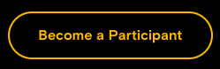
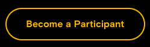

Referral Partner |
Service Partner |
Nomad |
Referral Partner |
Service Partner |
Nomad |
|
| Minimum Number of Trained Consultants | 1 | 2 | 4 |
| Minimum Stake in HYB Tokens | 1 000 000 | 5 000 000 | 10 000 000 |
| ADAX Certificate Badge | No | Yes - Silver | Yes - Gold |
| ADAX Referring Badge | Yes | No | No |
Referral Partner |
Service Partner |
Nomad |
|
| Receives leads from ADAX regarding its sector of specialization | No | No | Yes |
| Receives incentives as a referral fee per listed token | 10% | 15% | 25% |
| Participates in profit sharing from market taker trading fees | No | No | Yes |
| Can provide ITL and regulatory services to Issuers of tokens listed on ADAX | No | Yes (No Regulatory) | Yes |